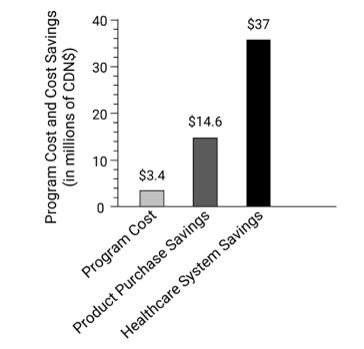

No estudo de Pavenski et al, 2022, com dados de duas décadas sobre Programa de PBM em Ontário, Canadá, observou-se a redução 51,6 milhões de dólares canadenses com o investimento de 3,4 dólares canadenses, ou seja, houve redução de 15,18 dólares canadenses em relação ao sistema de saúde e produtos hemoterápicos por dólar canadense investido.
Não é aconselhável a padronização direta dos achados desse estudo em todos os estabelecimentos de saúde. Por sua vez, quanto maior o investimento no programa de gerenciamento do sangue do paciente, maior e de maneira mais que proporcional, tende a ser a redução dos custos relacionados às transfusões de hemocomponentes.
Pavenski et al, 2022

Esta ferramenta permite calcular os custos relacionados às transfusões de concentrados de hemácias e as possíveis reduções de custos ao se utilizar estratégias alternativas componentes de programas de gerenciamento do sangue do paciente.